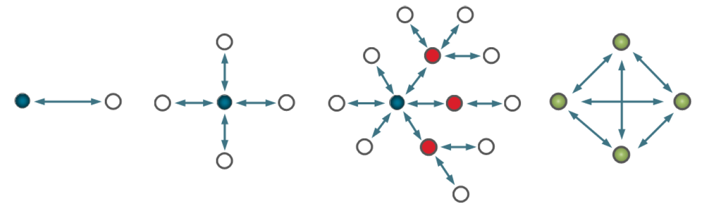

Silicon Labs Connect Stack
Silicon Labs is developing products designed to meet the demands of customers moving to a connected world of devices in the home, often referred to as the IoT (Internet of Things). At a high level, the IoT goals for Silicon Labs are as follows:
- Connect all devices in the home with best-in-class mesh networking, either with Ember ZigBee PRO or other emerging standards.
- Leverage the company expertise in low-power, constrained devices.
- Enhance established low-power, mixed-signal chips.
- Provide low-cost bridging to existing Ethernet and Wi-Fi devices.
- Enable cloud services and connectivity to smartphones and tablets that promote ease of use and a common user experience for customers.
Achieving these goals increases adoption rates and user acceptance for IoT devices in the Connected Home, but also involves certain challenges.
One challenge is managing devices requiring low-power consumption, such as battery-powered devices where long battery life is essential. To meet this challenge, Silicon Labs has developed the Silicon Labs Connect stack. Connect SDK provides a fully-featured, easily-customizable wireless networking solution optimized for devices that require low power consumption and are used in a simple network topology.
Another challenge is to extend an existing, IEEE 802.15.4 based proprietary network. Connect stack's MAC mode provides full access to the MAC layer, which makes it fully compatible with other IEEE 802.15.4-compliant networks.
Connect stack includes the following functionalities:
- It can work with a wide range of radio configurations and is configurable to be compliant with regional communication standards worldwide. Simplicity Studio is shipped with canned configurations designed for maximum performance under each regional standard.
- The stack can operate simple network topologies, which can include sleepy devices or applications can leverage Connect lower layers and build custom routing systems on it.
- It also includes a built-in support for Application Framework, which provides a basic toolset for embedded development, such as scheduling or memory allocation.
- The Connect stack is part of the Silicon Labs Flex SDK (Software Development Kit), installed through Simplicity Studio. Connect runs on top of RAIL (Radio Abstraction Interface Layer), also included with the Flex SDK. RAIL provides an intuitive, easily-customizable radio interface layer that is designed to support proprietary or standards-based wireless protocols. For more information, see UG103.13: RAIL Fundamentals.
With all this functionality already implemented in the stack, users can focus on their end application development and not worry about the lower-level radio and network details.
Modes of Operation
When a Connect device joins a network, it must choose its mode of operation. Inter-operation between these modes is not supported. Therefore, users should choose the mode early in the design stage. The following modes are supported:
Extended Star Mode
- A PAN coordinator (blue node in the figure below) administers a centralized network, permitting joining by end nodes (white nodes - can be sleepy) and range extenders (red nodes) to realize Point-to-Point, Star, and Extended Star networks
- The Network layer supports message routing between any two devices (and multiple endpoints at those devices) in the network
- Multiple built-in features ("plugins") provided by the stack and/or application framework.
Direct Mode
- A mode for proprietary applications that prefer more complete control of network behavior
- Supports connections between devices that are in range of each other (green nodes below) - any such device with correct PAN parameters can join
- The Network layer supports endpoints, but provides no routing "out of the box" - optimized routing can be implemented in the application
- Multiple built-in features ("plugins") provided by the stack and/or application framework
MAC Mode
- A mode (essentially: the Connect MAC layer) for applications that need to be fully IEEE 802.15.4 compatible and inter-operable (when used with a 15.4-compliant radio configuration)
- Supports connections between devices (can be sleepy) that are in range of each other (green nodes below)
- Connect Network layer is not implemented (therefore, no endpoints and fewer built-in features available)
- Uses a more complex API than other modes
- Some Application Framework plugins (e.g., OTA, Mailbox) won't work out of the box
Network Topology
The Connect stack supports three topologies, shown in the figure below:
- Point to Point
- Star
- Extended Star
- Single Hop (Direct or MAC)

Point to Point, Star, Extended Star and Single Hop Network Topologies
Stack Structure
The Connect stack provides code organized into three functional layers, as shown in the following figure:
The PHY layer must use the frame format defined by IEEE 802.15.4 (1 Byte PHR), but otherwise fully configurable with the radio configurator. For more details, see AN971.
The MAC layer is based on the IEEE 802.15.4-2011 standard. In MAC mode, the layer is fully compliant with the standard (note that the PHY layer must be configured to be compliant as well). In Extended Star and Direct mode, the MAC layer is not fully compliant with the standard.
The Network layer is based on a proprietary protocol.
For more details about the stack layers and features, see UG235.03.
Application Layer
Finally, the Connect Application Framework provides a complete tool and API infrastructure over the underlying stack layers. The Application Framework provides a basic toolset to develop embedded applications, including a simple task scheduler, a dynamic memory manager, and a non-volatile memory manager. Some functionality within the Application Framework and the Connect stack layers is provided in the form of individual building blocks called plugins. For more details about the plugins for each layer, see the Silicon Labs Connect Application Framework API Reference included in the stack documentation.
For more information about Connect Stack, see UG103.12.
Recommended Documentation
The following list is a set of recommended documentation to get started with Connect:
 1.8.13
1.8.13